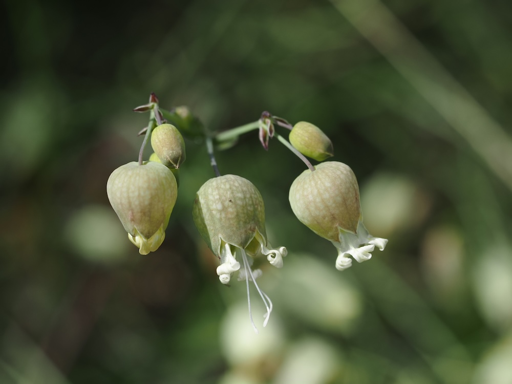

Knall-Trick für Kinder
Die aufgeblasenen Kelche sind das absolute Erkennungsmerkmal — sie sehen aus wie kleine grüne Ballons unter den weißen Blütenblättern. Generationen von Kindern haben damit gespielt: Kelch zwischen den Fingern halten und gegen die Stirn klatschen — gibt einen leisen Knall (wenn der Ballon noch frisch ist). Botanisch funktional sind diese aufgeblasenen Kelche als Schutz für die Samen vor Regen und Insekten.
Essbares Wildgemüse
Die jungen, zarten Blätter und Triebe sind im Frühling und Frühsommer essbar — leicht süßlich, mit etwas erbsig-frischem Geschmack. In Spanien (collejas) und Italien (silene cucubalus) ist Silene vulgaris ein traditioneller Bestandteil regionaler Küchen, in Suppen oder als Pasta-Einlage. Bei uns wird er kaum noch genutzt — schade, denn er ist eine der besten Wildgemüse-Pflanzen unserer Wiesen.